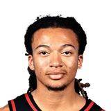

“Gilbert, I respect his game to whatever degree, but when you try to compare that to ‘The Dream,' Hakeem Olajuwon, big man back in the day, the skill-set and the footwork that Hakeem had, [Arenas] needs to go back and look at some more film because I don't think he really knows what the hell he’s talking about,”
What Kelvin Sampson has said about other NBA players and coaches
4 quotes from Kelvin Sampson about 5 other people around the NBA, newest first. Each one links to its original source.
Best quotes
Chris Baldwin:University of Houston coach Kelvin Sampson on Kingston Flemings:
“I don't think Kingston's a Top 10 pick. I think he's a Top 5 pick. If I was an NBA team, I'd draft him in Top 5. And he may (go there).”
Kelvin Sampson on Kingston FlemingsTwitter
“It was Jeremy. He walked into the office and said, ‘Coach, I want to apologize for missing that shot. I’ll make the next one.’I gave him a fist bump and he walked out.“It didn’t surprise me. I know he’s a high-character kid and he cares.”
What NBA players and coaches have said about Kelvin Sampson →
Quotes per season
Kelvin Sampson talks most about
 Gilbert Arenas1 quote
Gilbert Arenas1 quote Hakeem Olajuwon1 quote
Hakeem Olajuwon1 quote Jeremy Lin1 quote
Jeremy Lin1 quote
Kingston Flemings1 quote Omer Asik1 quote
Omer Asik1 quote
2025-26
1 quoteChris Baldwin:University of Houston coach Kelvin Sampson on Kingston Flemings:
“I don't think Kingston's a Top 10 pick. I think he's a Top 5 pick. If I was an NBA team, I'd draft him in Top 5. And he may (go there).”
Kelvin Sampson on Kingston FlemingsTwitter
2023-24
1 quote“Gilbert, I respect his game to whatever degree, but when you try to compare that to ‘The Dream,' Hakeem Olajuwon, big man back in the day, the skill-set and the footwork that Hakeem had, [Arenas] needs to go back and look at some more film because I don't think he really knows what the hell he’s talking about,”
2012-13
2 quotesRockets coachKelvin Sampson on Omer Asik's offense:
“I saw flashes of no offense when he came in. Actually, his offense was offensive.”
“It was Jeremy. He walked into the office and said, ‘Coach, I want to apologize for missing that shot. I’ll make the next one.’I gave him a fist bump and he walked out.“It didn’t surprise me. I know he’s a high-character kid and he cares.”